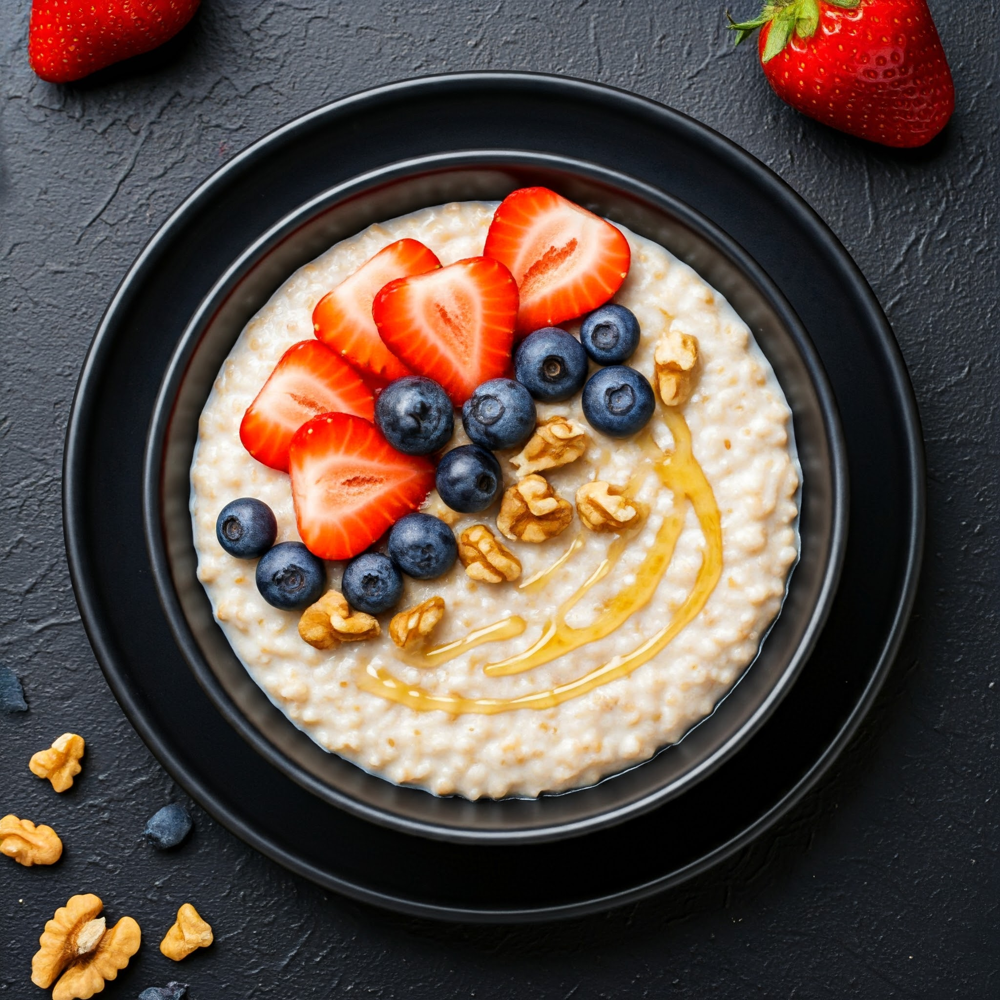

Healthy Oatmeal

Description
This healthy oatmeal is a nutritious and delicious way to start your day. It's made with rolled oats, almond milk, and a variety of toppings like fresh fruits, nuts, and seeds. Perfect for a quick and satisfying breakfast.
Ingredients
- 1 cup rolled oats
- 2 cups almond milk (or any milk of your choice)
- 1 tablespoon honey or maple syrup
- 1/2 teaspoon cinnamon
- 1/4 teaspoon salt
- Fresh fruits (e.g., berries, banana slices)
- Nuts and seeds (e.g., almonds, chia seeds)
- Optional toppings: nut butter, shredded coconut, dark chocolate chips
Instructions
- In a medium saucepan, combine the rolled oats, almond milk, honey or maple syrup, cinnamon, and salt.
- Bring to a boil over medium heat, then reduce the heat to low and simmer for about 5-7 minutes, stirring occasionally, until the oats are tender and the mixture has thickened.
- Remove from heat and let it sit for a minute to thicken further.
- Serve the oatmeal in bowls and top with fresh fruits, nuts, seeds, and any other desired toppings.
- Enjoy your healthy and delicious oatmeal!